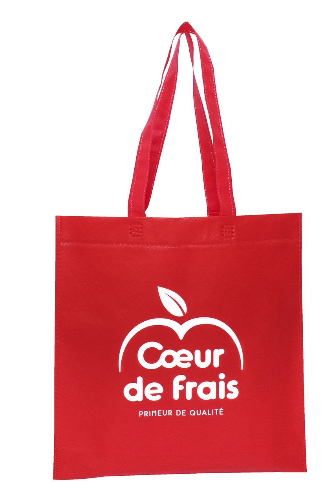

Our oceans are so mysterious and fascinating, that scientists estimate that we have only explored 5% of them and only 10% have been mapped on modern satellites. Ocean species that have been discovered so far make up 15% of the world's species which is about 242,000, but scientists believe there are as many as 2.2 million or more species living in the ocean. This means that 91% of ocean species have yet to be discovered and 80% of the ocean is left unexplored, unmapped and unobserved. We should be protecting the ocean as it has so many secrets to be discovered and history to be made.
Ocean pollution is when toxic waste gets into the ocean like sewage, trash, oil spillages while drilling and other toxic chemicals. This harms and destroys marine life.
Ocean pollution is caused by the actions of humans. One of them is nutriends and algae blooms. Nutrients such as nitrogen and phosphorus are essential to plant growth but too much of it can kill life. If there is an area of overgrown algae which are also known as red tides starts to harm life. It produces toxic effects that can kill marine life and even harm humans. The overgrown algae sinks and takes all the oxygen out of the water killing fish and plant life. This can be caused by humans from using fertilisers on farms which lead to runoff of the chemicals and make there way to nearby lakes, rivers and oceans.
Another cause of ocean pollition is trash. Littering, poor waste management and winds is ehat forms marine debris over 80% is from onland sources. One of the most common types of marine debris are plastic items such as: shopping bags and beverage bottles, along with cigarette butts, bottle caps, food wrappers, and fishing gear. Plastic waste is a huge issue as it takes centuries to decompose.
Marine animals, mainly sea turles mistake plastic items as food and eat them, which leads choking or starving to death, fish get tangled up and injured in debris. Small organiisms such as plankton eat on microplatics, and ingesting the chemicals from the platic into their flesh. When small organisms that have consumed microplastics are eaten by their predators ,the toxic chemicals then become part of their systems. Microplastic pollution making its way up the food chain to where even humans are now consuming microplastics. This has been the leading cause for marine species going extinct and serve health problems for humans.


There are many consequences to ocean pollution, such as:
Harm to Wildlife - Plastic pollution has the most impact on marine life and the oceans ecosystems. Plastic items that are consumed or come into contact with marine animals causes, infections, suffocation, entanglement and internal injuries. 17% of marine species that are affected by this are on the International Union for Conservation of Nature Red List of Threatened Species. Floating platics can also carry invasive species which threatens the ecosytems, biodiversity and the food chain.
Harm to Human Beings - Microplatics are found everywhere: drinking water, beer, the soil where we vegetables grow. It gets inside our system and can cause development, neaurological, reproductive and immune disorders. Toxic chemicals can produce on plastic's surface and can be transferred to humans through eating seafood.
Climate Change - Fossil fuels and plastic waste that are incinerated releases carbon dioxide and methane into the atmosphere which increases greenhouse emissions.
Retrieve Plastic from the Ocean - New technology have been developed to collect large amounts of debris but it's impossible to catch microplastics, so scientists have decided that prventing them from entering rivers and seas is the best solution. Another soltuion to help with plastic pollution is implementing the use of recycling and not to manufacture anu unnecessary plastic items. Another solution is to reduce the use of plastic in everyday life. This can help stop the marine pollution as plastic pollution causes 49% of it.
Other things people can do to help is:
